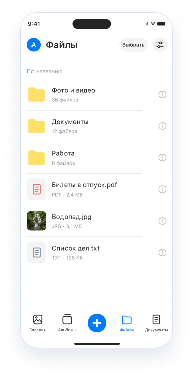
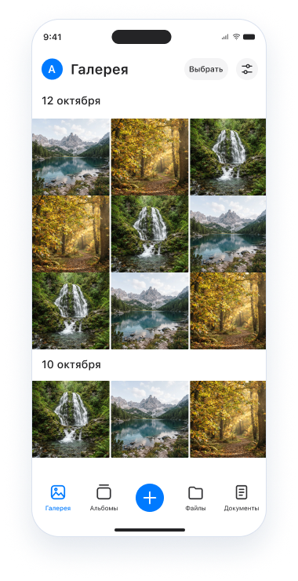

Проектам — папки.
Файлам — порядок.
Собирайте документы и материалы по темам. Отдельная папка для проекта поможет держать нужное рядом.
ФАЙЛЫ И ПАПКИТУЧКА ДЛЯ БИЗНЕСА
Документы, фото и видео для задач вашей команды. Собирайте файлы в папки, открывайте в приложении и отправляйте коллегам ссылку.
Познакомиться с ТучкойВаши рабочие материалы. Ваш привычный iPhone.
01 / ВОЗМОЖНОСТИ
Когда файлы упорядочены,
проще перейти к работе.
Собирайте документы и материалы по темам. Отдельная папка для проекта поможет держать нужное рядом.
ФАЙЛЫ И ПАПКИОткрывайте фотографии и видео в приложении. Просматривайте материалы, которые нужны для следующей задачи.
ПРОСМОТР МАТЕРИАЛОВСкачивайте файлы из Тучки на iPhone, когда нужно использовать их в дальнейшей работе.
СКАЧИВАНИЕ ФАЙЛОВДелитесь документами, фотографиями и видео с коллегами. Перед отправкой проверьте, кому открываете доступ.
ОБМЕН ССЫЛКАМИ02 / РАБОЧИЕ СЦЕНАРИИ
Тучка помогает держать материалы
под рукой в течение дня.
Откройте нужный документ и отправьте ссылку участникам обсуждения.
Соберите фотографии и видео по проекту в папку, чтобы вернуться к ним при работе.
Найдите материал в папке проекта и скачайте файл, который нужен на устройстве.
Примеры использования. Для загрузки, скачивания и других операций с сервером нужно подключение к интернету.
03 / В ПРИЛОЖЕНИИ
Папки, фотографии и документы — в Тучке на iPhone. Переключайтесь между материалами и продолжайте свою работу.
01Собирайте файлы в папки
02Просматривайте фото и видео
03Скачивайте и делитесь ссылками


04 / ЕЩЁ НЕСКОЛЬКО ОТВЕТОВ
Для работы с файлами, документами, фотографиями и видео: хранить в папках, просматривать, скачивать на устройство и передавать по ссылке.
Отправьте ссылку на файл коллеге или другому получателю. Проверяйте адресата: ссылка может предоставить доступ к содержимому файла.
Тучка разрабатывается для iOS. Точные требования к системе и совместимым устройствам появятся на странице приложения в App Store.
Ссылка на App Store появится после публикации приложения. По вопросам использования Тучки напишите на contact-support@tuchkapp.ru.
ТУЧКА ДЛЯ ВАШЕЙ КОМАНДЫ
Есть вопросы о приложении или использовании
Тучки в компании? Напишите нам.
ДОКУМЕНТЫ И ПОМОЩЬ